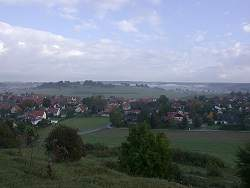

| In English |
| In English |
Schwäbische Alb
|  |
| Image: die typische Landschaft der Albhochfäche bei Steinheim am Albuch wurde durch den Einschlag eines Meteors verändert. |
{kind=link}
Die Schwäbische Alb ist ein deutsches Mittelgebirge.
Ihre nördliche Begrenzung ist der Albtrauf, die Schichtstufe (Siehe
 Süddeutsche Schichtstufenlandschaft) des Malm.
Im Süden tauchen ihre Schichten unter die jungen Ablagerungen der Süßwassermolasse.
Hier fließt die
Süddeutsche Schichtstufenlandschaft) des Malm.
Im Süden tauchen ihre Schichten unter die jungen Ablagerungen der Süßwassermolasse.
Hier fließt die
 Donau am Südrand der Alb entlang und bildet die südliche Grenze.
Die Schwäbische Alb hat vom Nördlinger Ries bis zur Schweizer Grenze eine Ausdehnung von 180km, vom Albtrauf bis zur Donau sind es
rund 30km.
Donau am Südrand der Alb entlang und bildet die südliche Grenze.
Die Schwäbische Alb hat vom Nördlinger Ries bis zur Schweizer Grenze eine Ausdehnung von 180km, vom Albtrauf bis zur Donau sind es
rund 30km.
Die Schwäbischen Alb besteht ausschließlich aus Gesteinen des Jura. Diese Gesteine werden in drei Abschnitte unterteilt, die unterschiedlich stark verkarstungsfähig sind.
- Der Lias wird auch Schwarzer Jura genannt.
Diese älteste und tiefste Schicht tritt nur vor dem nördlichen Albrand an der Oberfläche auf, wo die oberen Schichten bereits abgetragen sind. Im Lias sind eine große Anzahl von Fossilien, vor allem Ammoniten und Belemniten, aber auch Fischsaurier und Seelilien, erhalten. Sehr eindrucksvolle Exemplare können im Hauff-Museum in Holzmaden besichtigt werden. Hier finden sich keine Höhlen, da der Schiefer durch seine Entstehung sehr ölhaltig und damit wasserundurchlässig ist. - Der Dogger
oder Braune Jura, so genannt wegen des hohen Eisengehalts, der für eine
bräunliche Färbung verantwortlich ist.
Er enthält oolithische Eisenerze, die z.T. sogar abgebaut wurden. Ein Beispiel dafür ist die noch bis vor kurzem existierende Eisenhütte in Wasseralfingen bei Aalen. Auch hier kennt man kaum Höhlen. Dies liegt vor allem an der unzugänglichen Lage, da diese Schicht fast immer von mehr als 100m Malm bedeckt ist. - Der Malm schließlich ist der Weiße Jura.
Die oberste Schicht des Malm ist Stufenbildner, d.h. sie ist härter als die darunterliegenden Schichten. Diese werden also schneller abgetragen und die daraufliegende härtere Schicht bricht immer wieder nach. Dadurch wird eine scharfe Kante, der bekannte Albtrauf, erzeugt. Der Malm besteht aus Kalk CaCO3, manchmal auch kleinere Gebiete aus Dolomit CaMg(CO3)2, und weist nur sehr geringe Verunreinigungen auf. Daher kommt auch die weiße Farbe die zum deutschen Namen geführt hat.
Fast die gesamte Oberfläche der Alb ist vom Malm bedeckt. In dieser Schicht befinden sich auch fast alle bekannten Höhlen.
Die Art der Höhlenentedeckung ist von der Geographie abhängig. Manchmal machen Abtragung an der Oberfläche oder andere geologische Vorgänge die Höhle für den Menschen zugänglich. Nach diesen Kriterien läßt sich die Alb geographisch einteilen.
Im Norden der Alb findet man oben, am Albtrauf, häufig fossile Höhlen, die durch die Talentwicklung angeschnitten
wurden, und unten, auf der Höhe des
 Vorfluters, aktive Wasserhöhlen.
Oft sind die beiden Enden einer einst großen Höhle in gegenüberliegenden
Talhängen zu finden.
Ein sehr gutes Beispiel dafür ist die
Vorfluters, aktive Wasserhöhlen.
Oft sind die beiden Enden einer einst großen Höhle in gegenüberliegenden
Talhängen zu finden.
Ein sehr gutes Beispiel dafür ist die
 Falkensteiner Höhle und der nur
wenige hundert Meter entfernte Elsachbröller.
Falkensteiner Höhle und der nur
wenige hundert Meter entfernte Elsachbröller.
Auf der Albhochfläche, in heutigen
 Trockentälern, findet man
durch die Eintiefung dieser Täler angeschnittene Höhlen.
Besonders berühmt sind die Höhlen des
Trockentälern, findet man
durch die Eintiefung dieser Täler angeschnittene Höhlen.
Besonders berühmt sind die Höhlen des
 Lonetals.
Da sie in flachen Talhängen liegen und gut zugänglich sind, wurden sie
schon früh von Urzeitmenschen bewohnt.
Bei Ausgrabungen wurden unzählige ihrer Hinterlassenschaften geborgen.
Lonetals.
Da sie in flachen Talhängen liegen und gut zugänglich sind, wurden sie
schon früh von Urzeitmenschen bewohnt.
Bei Ausgrabungen wurden unzählige ihrer Hinterlassenschaften geborgen.
Auf der Albhochfläche selbst werden Höhlen meist bei Baumaßnahmen entdeckt. Diese Höhlen waren vorher nicht zugänglich und sind deshalb gut erhalten. Da sie nie mit Fackeln oder Kerzen befahren wurden weisen sie keine Verunreinigungen auf. In den letzten hundert Jahren wurden Höhlen, die bei Bauarbeiten für Fabriken gefunden wurden, häufig als billige Abwasserentsorgung benutzt. Dies ist heute zum Glück nicht mehr erlaubt, da die ganze Albhochfläche Wasserschutzgebiet ist.
Am S-Rand der Alb hat die Donau ihr Bett gegraben.
Auch dabei wurden Höhlen angeschnitten.
Genau wie im Lonetal wurden deshalb die Archäologen fündig (Siehe
 Blautal).
Blautal).
Die Bedeutung der Alb für die Trinkwassergewinnung ist nicht zu unterschätzen. Der Gesteinskörper enthält ein großes Trinkwasserreservoir. Dieses Wasser wird an einer Unzahl von Quellen im ganzen Gebiet gefasst und genutzt. Aber auch das Donauried ist als natürlicher Wasserfilter unersetzlich.
Die Wasserversorgung hat hier eine lange Tradition. Da die Hochfläche fast vollständig wasserlos ist, haben sich die frühen Siedler an sogenannten Hülen niedergelassen. Dabei handelt es sich um ehemalige Vulkanschlote die Aufgrund des wasserdichten Materials, aus dem sie bestehen, kleine Seen bildeten. Durch die geringe Wassermenge und hygienische Probleme wurden die Albbewohner schon früh zur Errichtung der Albwasserversorgung gezwungen.
Eine erschöpfende Zusammenstellung der Karsterscheinungen dieses Gebiets bietet das Buch Höhlenführer Schwäbische Alb von Hans Binder. Durch jahrzehntelange Arbeit auf diesem Gebiet und eine Vielzahl von Veröffentlichungen ist Herr Binder sicher jedem Höhleninteressierten bekannt.
Beschriebene Schauhöhlen und Karsterscheinungen:
 Aachquelle
Aachquelle Bären- und Karlshöhle
Bären- und Karlshöhle- Brenztopf
 Burghöhle Dietfurt
Burghöhle Dietfurt Dolinenweg Hengen
Dolinenweg Hengen- Donauversickerung
- Dreieingangshöhle
- Falkensteiner Höhle
- Finsteres Loch
- Göpfelsteinhöhle
- Große Scheuer
- Gußmannshöhle
- Gutenberger Höhle
- Heimensteinhöhle
- Höhlenkundliches Museum
- Hülbener Tropfsteinhöhle
- Kahlensteinhöhle
- Karstkundlicher Wanderweg Laichingen
- Kocherursprung
- Kolbinger Höhle
- Laichinger Tiefenhöhle
- Linkenboldhöhle
- Mordloch
- Mühlheimer Höhle
- Nebelhöhle
- Ofnethöhlen
- Olgahöhle
- Schertelshöhle
- Schillerhöhle
- Schopflocher Moor
- Sieben-Täler-Höhle
- Steinernes Haus
- Sontheimer Höhle
 Tiefer Stollen
Tiefer Stollen- Uracher Wasserfall
- Vogts Grub
- Friedrichshöhle
- Wulfbachquellhöhle
- Zwiefaltendorfer Tropfsteinhöhle
- Blautopf und Blautopfhöhle
- Brillenhöhle
- Geißenklösterle
- Große Grotte
- Hohler Fels
- Schmiecher See
- Schmiechquelle
- Sirgensteinhöhle
 Ulmer Museum
Ulmer Museum- Urspring
- Bocksteinschmiede
- Charlottenhöhle
- Fohlenhaus
- Hohlenstein
- Hungerbrunnen
 Löwenmensch
Löwenmensch- Lonetopf
- Loneversickerung
- Ulmer Museum
- Vogelherdhöhlen
- Siehe auch
- Hans Binder (1989):
Höhlenführer Schwäbische Alb,
Höhlen - Quellen - Wasserfälle.
Konrad Theis Verlag, Stuttgart und Aalen, 1989, 3. Auflage, ISBN: 3806204993
Ein echter Klassiker, der das Höhlengebiet Schwäbische Alb erschöpfend beschreibt. Der flexible, wasserabweisende Einband macht es zum praktischen Begleiter auf jeder Wanderung.
 bei Amazon.de
bei Amazon.de
- Otto Krösche (1984):
Erlebte Urzeit,
Nachdenkliche Spaziergänge auf der Schwäbischen Alb
Theiss Vlg., Stgt. 1984, ISBN: 3806203814, Taschenbuch, 278 Seiten
bei Amazon.de
- Wilfried Rosendahl, Baldur Junker, Andreas Megerle, Joachim Vogt (Hrsg.) (2006):
Schwäbische Alb,
Wanderungen in die Erdgeschichte (18)
Verlag Dr. Friedrich Pfeil, München 2006, ISBN: 3899370651, Taschenbuch, 162 Seiten
bei Amazon.de
 Bizarre Höhlenwelten
Bizarre Höhlenwelten- Höhlen und Fledermäuse auf der Schwäbischen Alb
- Riffe im Weißen Jura der Schwäbischen Alb Günter Schweigert, Stuttgart